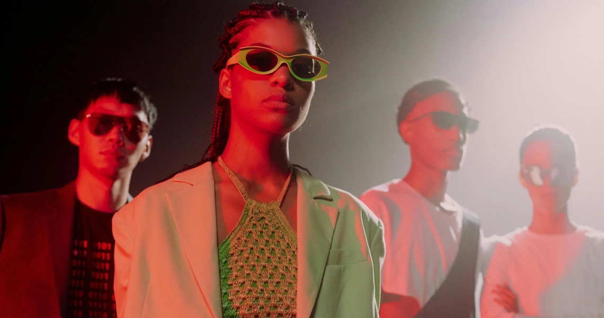

A Vanguarda Fashion é o resultado de um movimento que se concretizou graças à visão inovadora da Neo Couture, uma empresa líder no cenário da moda futurista. Sediada em uma metrópole global, a Neo Couture é reconhecida por sua abordagem disruptiva e pioneira na criação de tendências de moda que transcendem os limites convencionais. A marca desempenha um papel fundamental na redefinição dos padrões estéticos, explorando novas tecnologias e materiais sustentáveis.
Anteriormente conhecida como Projeto Avant-Garde, a Vanguarda Fashion está empenhada em moldar o futuro da moda, oferecendo uma visão audaciosa e progressista que reflete os valores e aspirações da sociedade moderna. Ao integrar elementos de alta tecnologia, como impressão 3D e tecidos inteligentes.